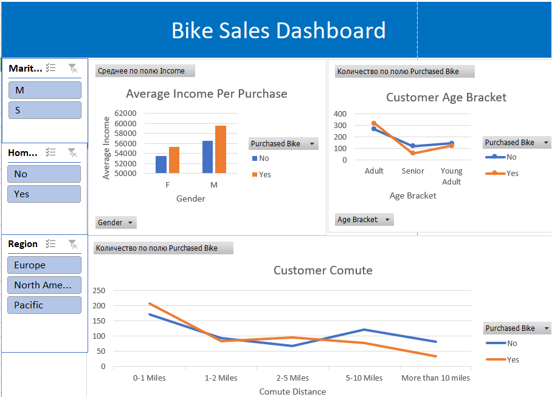

In this project I will use Excel in order to create the Dashboard with interactive filters that visualises the information in the dataset. I will also filter and bracket data in order to help with the visualisation.
The dataset contains information about individuals and their characteristic related to their demographics and purchasing behavior in the context of buying a bike.
Using Excel I cleaned and modified the data and then used pivot tables in order to create the dashboard.
The result is an interactive dashboard that showcases the key information present in the dataset.
